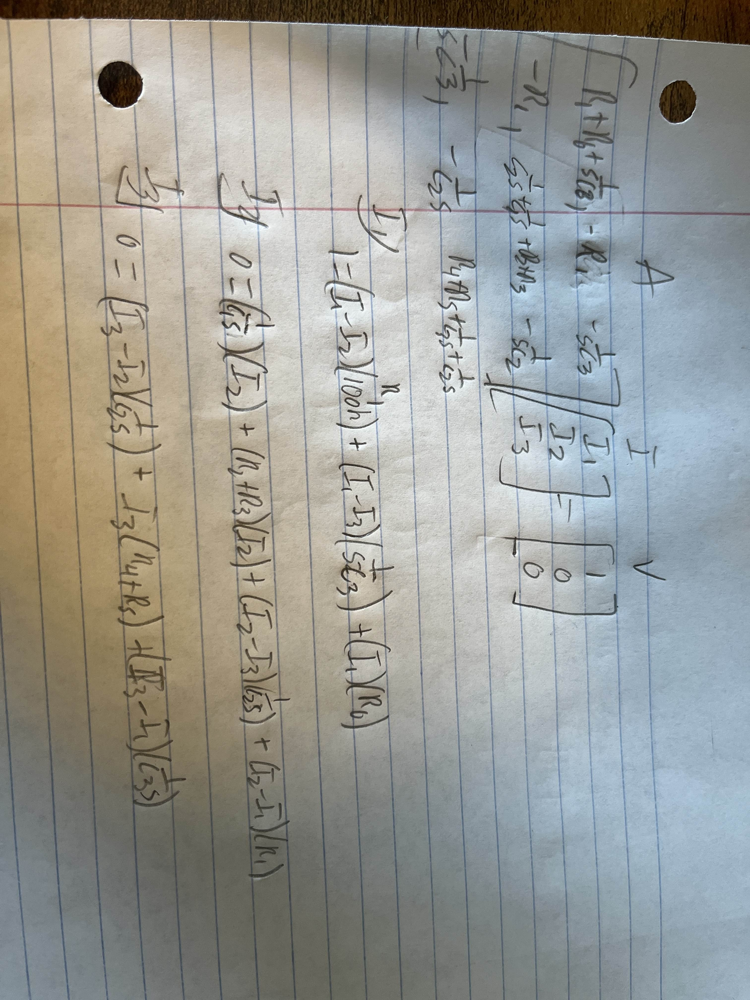
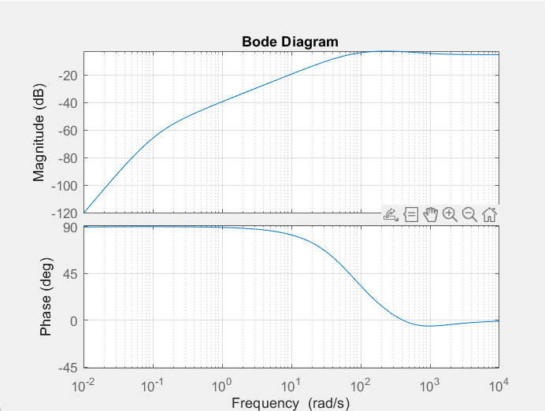

Introduction
The goal of this lab was to use MATLAB to solve a circuit. This is
done utilizng laplace tranforms by turning the circuit into an s
domain circuit. Additionally, the results of the circuit analysis are
cleaned up and plotted in a variety of ways.
Procedures
Section 1.1
The circuit was given in its time domain form and was additionally,
shown at half resistor values to give the average values for
transforming to s domain. To transform to the s domain, Each resistor
stays the same where capacitors are turned into 1/(sC). Using this
information, Three mesh equations can be written and matrix equations
can be made out of those. Below is a picture of my handwritten work
for this part.

Section 2
Vout is derived from using the currents found in the mesh equations multiplied by resistor values from the output location to the ground node.
Section 5
The value of Np(1) comes up as zero because we divide the value of Np by the variable k which is the max value between Np and Dp. When dividing by this max value Np becomes basically zero for the first value of the vector.
Section 6
The Bode Diagram shows how the circuit will react udner different frequencies. From the graph I got from the script, it seems that an increase in frequency will cause an almost linear increase in magnitude until a certain point. Below is the diagram output from my script.

Conclusion
What did you enjoy about this lab?
I enjoyed getting practice with laplace transforms on a real circuit that is used. I liked using these transforms to solve an entire problem with a simple and quick script.
What didn’t go well in this lab?
I had a hard time understanding if my values were actually correct. I had to go back and change a few things around to get an end result that I think is correct.
How would you improve the lab experiment for future classes?
I would make the circuit include a inductor so we get practice solving the transforms with inductors in them.